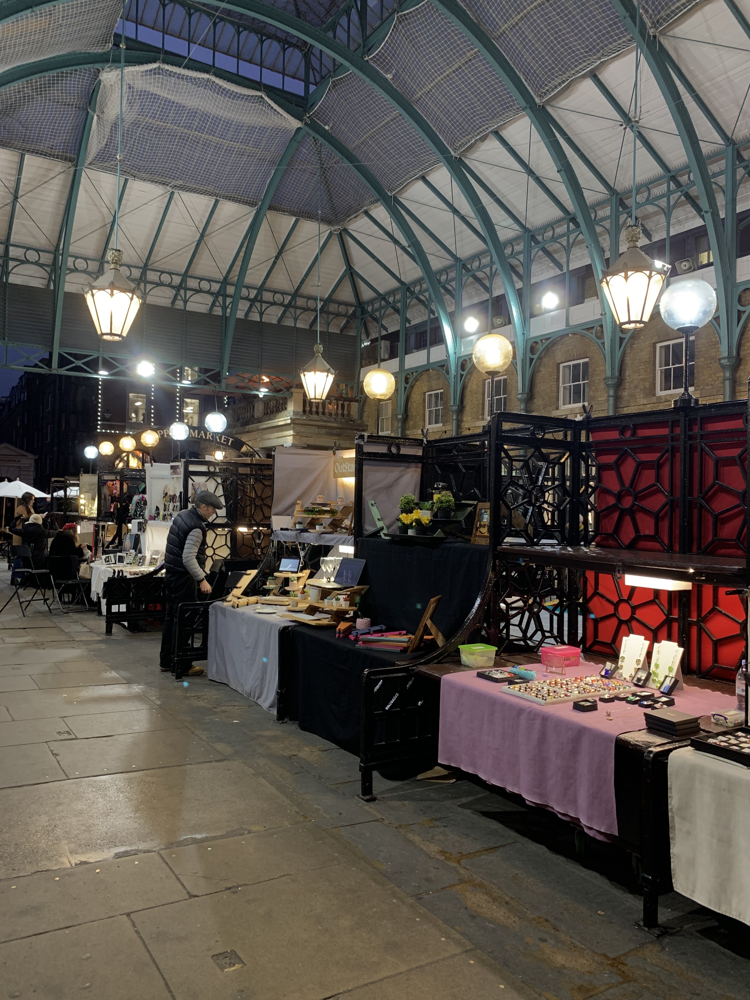
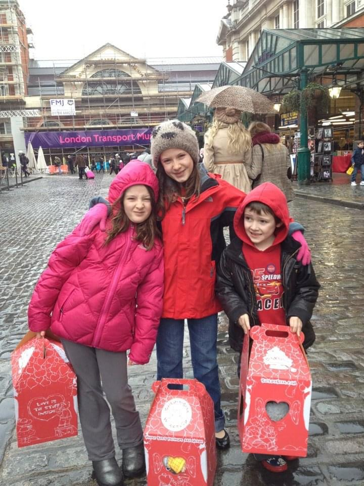

Growing up, Covent Garden was my family's favorite place to visit on the weekends. Covent Garden is a historic and vibrant area of London, located in the West End. It was once a fruit and vegetable market in the 16th century and has now been transformed into a popular destination for both locals and tourists.
One of the main attractions in Covent Garden is the Covent Garden Market, which is my personal favorite. It is home to an array of unique and independent shops, restaurants, pubs, and cafes. Here, visitors can find everything from handmade jewelry and art to artisanal chocolates. The Moomin Store is also located here... if you are into that.
Art stalls in the center of Covent Garden
My siblings and I circa 2012
If you want a little history, The London Transport Museum is also located in Covent Garden and was my family's favorite museum in London. We would go every few months, it is definitely more for families, however, you can still have fun as an adult. This museum tells the story of London's transportation system, from the early days of horse-drawn carriages to the modern-day tube. The exhibit takes you through life size replicas of the transportations, in addition to including some interactive/educational games.
Covent Garden is also a hub for street performances. The street performers in Covent Garden are not to be missed. You'll find acrobats, magicians, and musicians putting on shows throughout the day, creating a lively and festive atmosphere.
Lastly, there are tons of pubs and bars in Covent Garden where you can grab a drink and soak up the local atmosphere of bustling Westminster. This area is known for its lively nightlife, as SOHO is THE nightlife capital of London, so whether you're looking for a quiet drink or a wild night out, you're sure to find something to suit your tastes...